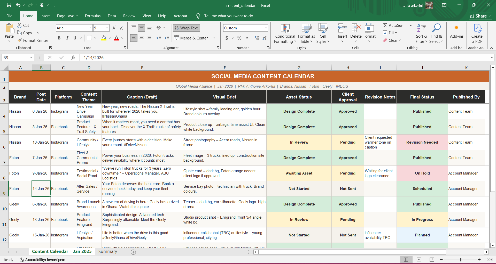
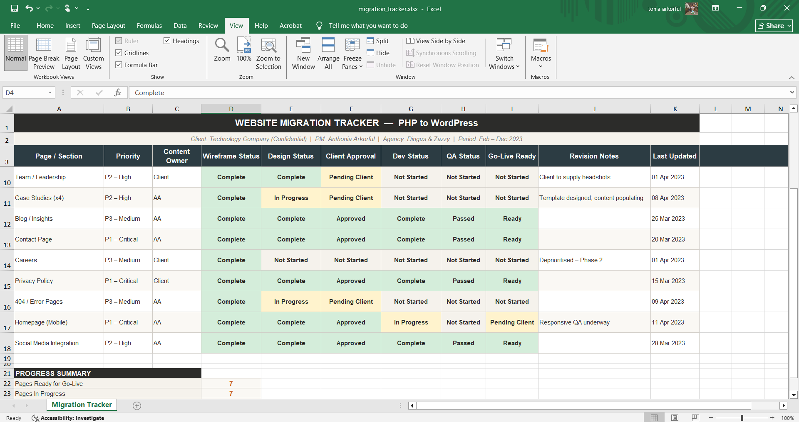
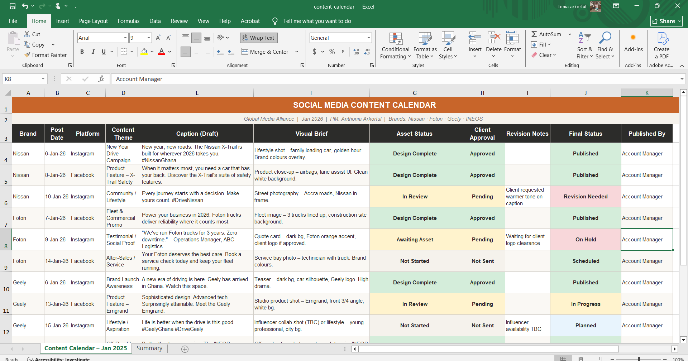
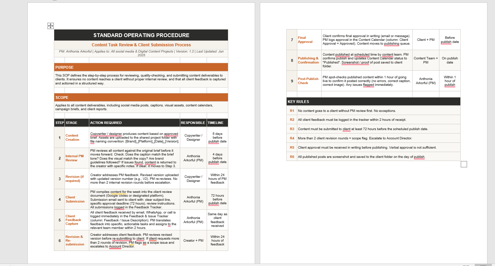

Eight years of coordinating designers, developers, clients, and stakeholders across agency, technology, media, and healthcare environments. I manage the communication, systems, and clarity that sit between a brief and a finished deliverable.
I am a Digital Project Manager with over eight years of experience spanning agency, technology, media, healthcare, and consulting environments. I specialise in the coordination layer of digital projects: the communication, workflows, and decision-making that sit between a client's brief and a team's delivery.
I am not limited to agency work. I am equally comfortable managing technology product sprints, marketing campaigns, website builds, and cross-functional digital initiatives. Wherever there are stakeholders to align, timelines to manage, and deliverables to ship, I can lead the work.
The biggest project risks are rarely technical. They are communication gaps, unclear ownership, and feedback that disappears into conversations. I fix those things by building systems that give everyone visibility, running meetings that produce clear actions, and ensuring delivery does not stall between handoffs.
I actively integrate AI tools into my project management practice — using them to speed up documentation, structure meeting notes, draft briefs, and improve my own workflow efficiency. I am building fluency in how AI can support project delivery, not just as a user but as a practitioner who can help teams adopt these tools thoughtfully.
I build tracking systems before problems arise, not after they do.
I translate feedback into specific tasks and updates into language stakeholders understand.
I coordinate designers, developers, writers, and strategists without losing the thread of any one.
When things shift — and they always do — I focus on solutions, not the noise around them.
Structured async habits, clear documentation, and reliable communication across time zones.
I bring AI tools into workflows where they genuinely improve speed and quality of delivery.
Five real projects across agency and digital environments. What I did, what I decided, and what happened. Click any card to expand.
Coordinated a full website rebuild for a technology company — managing designers, developers, and the client within a structured remote-first workflow, using Basecamp and a custom Excel tracker I built to keep 15+ pages on track.
A technology company needed to migrate their website from a legacy PHP platform to WordPress, with a simultaneous brand refresh and social media rollout. I was the Project Manager embedded in the agency, working in EST hours with a distributed team.
With 15+ pages in flight at different stages, and client feedback arriving across email and calls, there was no single system to show where each page stood. Without one, content would move to development in the wrong state, or sit waiting without anyone realising.
Midway through the project, the client requested a significant scope addition — a careers section and case study CMS — not in the original brief. Rather than absorbing it quietly, I named it as a scope change, outlined the time implications, and proposed a phased approach. The careers section moved to Phase 2. That one conversation protected the delivery timeline without damaging the client relationship.
The migration was delivered on schedule. The tracker became the team's single source of truth. The brand refresh and social rollout were completed within the same engagement. After the project, my manager publicly recognised it as one of the biggest PM levelling-ups she had seen — with zero edits needed on a board audit.
Managed concurrent content delivery for Nissan, Foton, Geely, and INEOS — each with separate calendars, approval cycles, and client contacts — without a missed publish deadline.
GMA managed social media for four automotive brands simultaneously. Each required three posts per week across multiple platforms, with distinct brand voices, separate client contacts, and independent approval processes.
Four brands running in parallel means four content calendars, four sets of client expectations, and four revision cycles overlapping every week. Without a structured system, content piles up, approvals slip, and something gets published without the right sign-off.
One client was consistently submitting feedback less than 24 hours before publish. Rather than escalating it as a client problem, I recognised it as a system problem: my submission window was too short. I restructured the calendar to build in a 72-hour client review buffer on every brand. That change eliminated late-stage scrambles across all four accounts, not just the one triggering it.
All four brands maintained a consistent publishing cadence. The structured approval process reduced last-minute revision requests and gave clients clear visibility into the content pipeline ahead of time.
A client flagged dissatisfaction with content direction. I identified the root cause as a process failure, not a quality failure, and redesigned the communication workflow for the account.
A client account became strained when delivered content consistently missed the mark in tone. Feedback was being received across informal channels but not properly captured or translated into clear direction for the team.
The surface problem looked like content quality. The real problem was that informal, unstructured feedback was reaching the team in a diluted form. The team was working hard with the wrong brief.
The instinct in that situation is to apologise and promise to do better. I did not do that. I diagnosed the process failure, named it clearly to both the client and the team, and proposed a structural fix. Naming the problem honestly — rather than managing around it — is what rebuilt trust quickly. The client needed to know someone understood what had gone wrong, not just that someone was sorry.
The account stabilised within two content cycles. The feedback framework introduced was adopted across other client accounts at the agency. No further escalation.
Coordinated a large-scale institutional healthcare congress involving medical bodies, sponsors, vendors, and internal teams — from planning through execution.
As Business Development Officer, I led coordination for the annual Fertility Society of Ghana Congress — a high-profile event involving medical professionals, sponsors, institutional healthcare partners, and public attendees.
Events of this scale involve contributors with different agendas, timelines, and communication styles. Without a dedicated event management structure, I had to build one — and keep sponsors, vendors, and internal teams accountable across a multi-month planning period.
A key sponsor delayed confirming their contribution level until two weeks before the event, holding up signage and print decisions. Rather than waiting further, I worked with the design team to prepare two versions of the signage in parallel — one with the sponsor featured, one without. When the sponsor confirmed, we had a ready-to-go file. The event printed on time. Preparing for a decision, rather than waiting for it, was the right call.
The congress was delivered successfully. Sponsor and partner relationships were maintained professionally throughout. Lister Hospital strengthened its standing within the medical community as a result.
Identified a recurring process gap in content review and submission across client accounts, and designed a Standard Operating Procedure that was adopted across the agency.
After resolving a client communication issue, I identified the same vulnerability across other accounts: content was being reviewed inconsistently, submission timelines varied, and there was no standard for how client approvals were captured and confirmed.
Without a shared standard, every account manager ran their own version of the workflow. That produced inconsistent client experiences and meant one person's informal habits could create a problem at any time.
I made the SOP tight enough to be consistent but left room for account managers to adapt it to specific client relationships. A process people do not follow is not a process. The rules I made non-negotiable were the ones that directly affected client trust: written approvals, 72-hour buffers, and revision limits. Everything else had flexibility built in.
The SOP was adopted across the agency's client accounts. It reduced late-stage revision requests and gave the team a consistent baseline for managing all client relationships.
Anthonia is truly one of a kind. Her qualities are rare, and any institution she works with gains a very valuable gem. She approaches every task with intention, commitment, and a strong sense of ownership — ensuring that everything she is responsible for is not just completed, but done well. What stands out most is her persistence and drive. She does not give up easily and will keep going until she achieves the outcome she is aiming for. She is dependable, driven, and consistently delivers value.
Anthonia genuinely believes she can achieve anything she sets her mind to, and she backs that belief with action and results. I trust her to approach any challenge — no matter how complex — with a solutions-oriented mindset. She does not get overwhelmed by problems; she focuses on finding a way forward and ensuring things are handled effectively. She has been consistent, reliable, and resourceful in her work.
For recruiters who want to see how I organise work, not just read about it. These are screenshots of real-style trackers and process documentation included in my proof-of-work library.

A structured publishing tracker showing content theme, caption draft, visual brief, asset status, client approval, revision notes, and final status across multiple automotive brands.

A page-by-page project tracker used to manage wireframes, design approvals, development status, QA, go-live readiness, and revision notes during a PHP-to-WordPress migration.

A closer look at how content status, approvals, and accountability were tracked so that multiple brands could move in parallel without missed handoffs or unclear ownership.

A documented process covering internal PM review, client submission, feedback capture, revision rules, final approval, publishing confirmation, and post-publish QA.
AI is changing how projects get planned, documented, and delivered. I am not waiting to be told how to use it — I am already doing it, and I am interested in roles where that matters.
I use AI tools to make my project management sharper: faster documentation, better-structured briefs, smarter prep for client meetings, and more consistent outputs. I also think carefully about where AI adds genuine value versus where it creates noise — that judgment is part of the skill.
I am comfortable working in AI-forward environments, and I can help teams who are figuring out how to integrate AI tools into their own project workflows.
Using AI to produce structured meeting summaries and action logs faster — so client records are accurate and complete without taking time away from the conversation.
Using AI to speed up the first draft of creative briefs, SOPs, and status reports — then editing for accuracy and context rather than starting from blank.
Using AI to research client industries, benchmark approaches, and prepare for stakeholder conversations more efficiently than manual research alone.
Exploring how AI tools can reduce manual steps in content approval and status reporting workflows — with a focus on what is genuinely useful, not what is just new.
The same logic applies whether I am managing a content calendar, a website build, or a cross-functional product initiative.
Everyone aligned on deliverables, timelines, and ownership before a single asset is created. Ambiguity at the start becomes a dispute at the end.
Trackers and workflows matched to the project's complexity. Not everything needs Jira. Not everything survives in an email thread.
Every client interaction has an agenda. Every decision is documented. Every piece of feedback captured in writing and actioned within 24 hours.
Blockers raised immediately — with options, not just the problem. No surprises at deadline.
Designers, developers, and writers should always know what is expected without having to ask. Clear ownership, specific briefs, regular check-ins.
Every deliverable checked against the original brief before it reaches a client. Not to duplicate the specialist — to protect the relationship.
Tool-flexible and quick to learn. The system matters more than the software.
I am actively looking for remote Digital Project Manager positions across agency, technology, and marketing environments. If you are building a team that needs structured delivery and clear communication, I would like to hear from you.
Based in Accra, Ghana · Available for remote and global roles